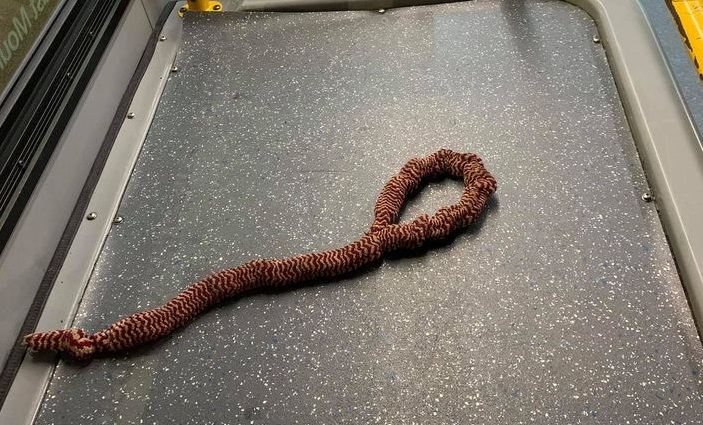

Totally Real Noose Found on Bus
NOTE: Story originally from June, reprinted here.
GlobalNews:
Oh BTW this was written by Simon Little, a name that continues to come up quite often in articles clearly written as enemy propaganda.
TDC_ARTICLE_START
TransLink and Transit Police are investigating potentially racially-motivated incident aboard a transit bus that has left a driver badly shaken.
It happened Wednesday to driver Ramgoat Buckaman after someone left a noose-shaped object on the bus. TDC_ARTICLE_STOP
A black bus driver, Ramgoat Buckaman, yes that is his real name, claims that he got into an altercation with a passenger, race unspecified, while driving in Vancouver. The passenger boarded the bus, and then, after absolutely zero provocation…
TDC_ARTICLE_START
“Suddenly I heard him say ‘OH LOOK DRIVER, SOMEONE LEFT YOU A NOOSE. PERFECT FOR HANGING,'” wrote Buckaman.
“I THINK YOU SHOULD HANG YOURSELF WITH IT AT THE END OF YOUR NIGHT…I WOULD UNDERSTAND IF YOU HANG YOURSELF.”
Global News has requested an interview with Buckaman.
Buckaman, whose Facebook page says he hails originally from Jamaica, wrote that his “heart sank” and he was left with his emotions “running wild” after the comments.
He said the man stayed on the bus across the Granville bridge, and then said “you must be so happy I’m getting off at the next stop, huh?” before exiting at Broadway.
TDC_ARTICLE_STOP
The only thing that makes this story even borderline possible is the sheer amount of homeless crazies who might be riding the Vancouver transit. I could see some crazy dude shouting that either with malice, or even without. However, that possibility seems quite quaint, considering that Ramgoat can be quoted as saying "my heart sank” and his emotions were “running wild”. I can guarantee you that if some crazy dude starts yelling at you while you're driving a bus, your response is not going to be "my heart sank." Something along the lines of "I had so much adrenaline I was jittering, my chest was tight, my heart was beating through my chest." Not "my heart sank".
TDC_ARTICLE_START
In a statement, TransLink spokesperson Ben Murphy said the transit agency and transit police were both looking into the file.
“We are aware of a deeply concerning incident involving one of our bus operators,” wrote Murphy.
“Racism has no place on our transit system and should not be tolerated under any circumstances.”
Transit police said they had not had the chance to speak with the driver as of Saturday.
TDC_ARTICLE_STOP
Adding to the unbelievability, the story is actually from June 27th. I looked up the Bubba Wallace now confirmed NASCAR fake noose hoax, and that story had been debunked by June 23rd, but this driver may not have heard about that yet. The noose itself is absurd, something that nobody could take seriously. Additionally, why wasn't there any video evidence of this? Either from passengers with their phones, or cameras inside the bus. Here's a story from 2014 when cameras were beginning to be added to the buses, although I suppose it's possible that this bus still had not been equipped by 2020.
According to TransLink spokesperson Ben Murphy, the transit agency and transit police are both looking into the file. That's interesting, but why not the actual police? Threatening someone with a noose is an actual crime. I suspect this is quite like a rape accusation that doesn't bring in the police, non-existent until proven otherwise.
I’ve been keeping you waiting, trying to get a picture of the “noose.” Here it is.
How did Jequeerus survive this?
Yes, that is a dog leash.